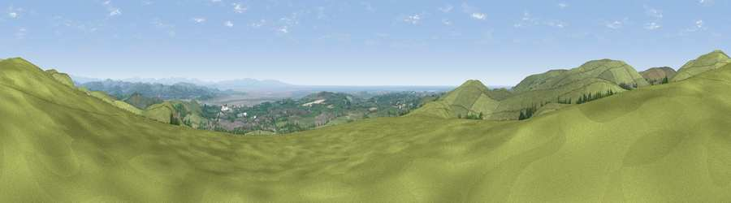

Viewpoint near Pennington
#1822 in England · top 13% of its area beats it · near PenningtonWhere it is
The exact computed spot (SD 26488 79350). Click the marker for map links.
The view, rendered

A 360° render of this exact spot computed from the terrain model, tree cover and land cover — summer colours, afternoon light, calibrated against photographs of famous viewpoints. Real trees, hedges and buildings will differ in detail.
The panorama
Grey silhouette: terrain skyline in each direction (720 bearings, Earth curvature and refraction included). Dashed green: skyline with trees (+15 m) and buildings (+8 m) as obstacles. Blue strip: how far the ground is visible on each bearing.
Where the view opens
Wedge length = distance to the farthest visible ground on that bearing (vegetation-aware). Rings at 10, 25 and 50 km.
What fills the view
62% grassland · 15% woodland · 13% water · 6% built-up · 3% cropland
Angular shares of the visible panorama (visual magnitude), not map area. Landscape diversity 0.50 (0–1 Shannon).
Key numbers
More beautiful places nearby
The staircase of upgrades: each row has a higher view potential than everything closer. Driving times are estimates from straight-line distance, calibrated against real road routing — check an actual route before setting out.
| Place | Direction | Drive | Score |
|---|---|---|---|
| Bank House Moor | WNW · 2 km | ~6 min | 80.3 |
| Viewpoint near Beck Side | WNW · 3 km | ~6 min | 82.1 |
| Viewpoint near Soutergate | W · 3 km | ~7 min | 83.6 |
| Viewpoint near Cartmel | E · 9 km | ~18 min | 87.2 |
| Viewpoint near Whitbeck | WNW · 14 km | ~26 min | 88.1 |
| Viewpoint near Finsthwaite | NE · 15 km | ~28 min | 90.3 |
| The Knoll | S · 392 km | ~376 min | 91.0 |
54.20460, -3.12850 · source: screening · position refined by local search. Computed location — check access rights before visiting.